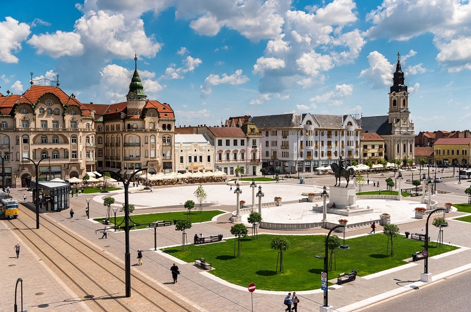

Piata Unirii si Palatul Vulturul Negru
Descriere
Oradea este considerat un oras multietnic si multicultural: într-o singură piață, se află mai multe atracții turistice: Biserica cu Luna, Biserica Sfântul Ladislau, Biserica Sfântul Nicolae.
Cel mai emblematic monument orădean este Palatul Vulturului Negru, situat în colțul nord-estic al Pieței Unirii. Această clădire este un ansamblu complex cu configuraţia spaţială şi cu faţadele concepute în stil lechnerian, operă a arhitecţilor Komor Marcell şi Jakab Dezső.
Pe lângă clădirile iconice, în Piața Unirii sunt amplasate și numeroase cafenele și restaurante.